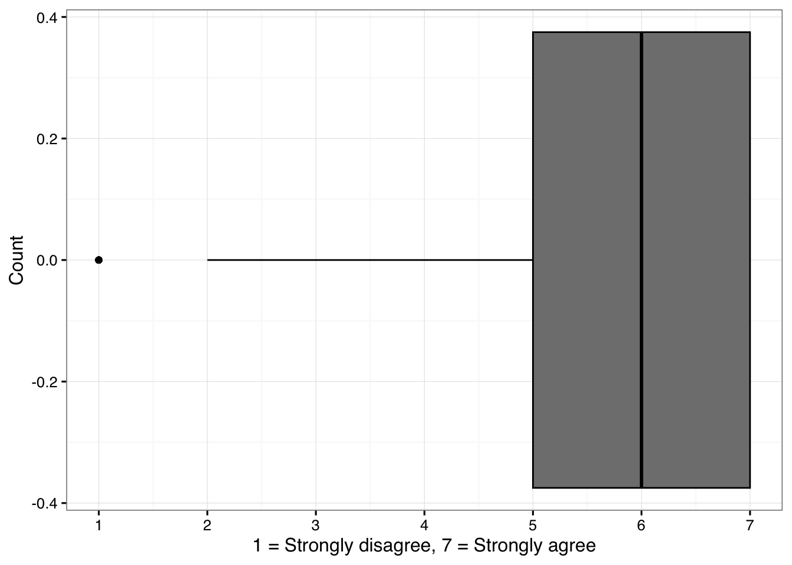
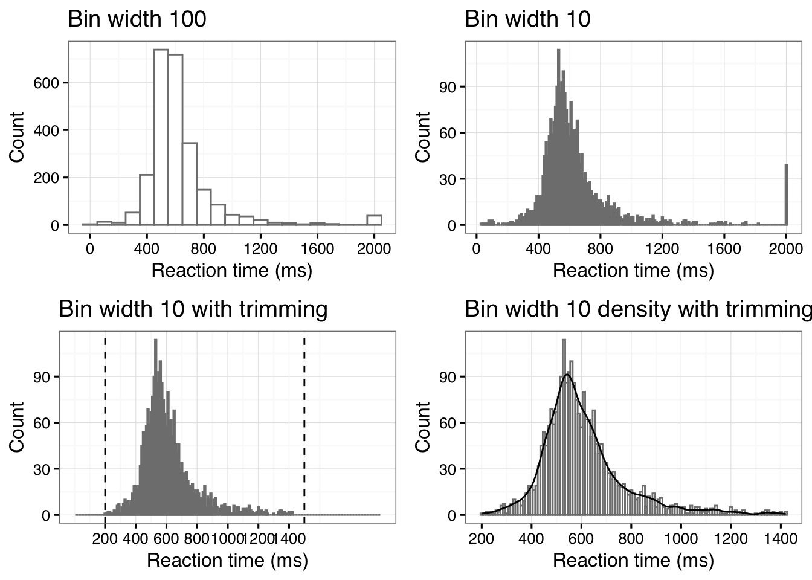

library(tidyverse,quiet=TRUE)
library(ggplot2,quiet=TRUE)
library(cowplot,quiet=TRUE)
library(MusicScienceData,quiet=TRUE)
options(repr.plot.width = 7, repr.plot.height = 4) # Default plot size for ColabCh. 6 – Outliers
This notebook is about outliers.
Outliers
It is not uncommon to obtain data which has some missing observations, perhaps even some nearly impossible values and funky distributions. There are remedies and procedures to diagnose and tackle these kinds of issues in statistics, some easy, some more tricky, and controversial. This text will not get deeply involved in the analysis of these issues, but I will present the basics. It is worth saying here that sometimes these problems may lead to insurmountable challenges for the analysis but more often there are simple techniques that can mitigate the problem. The key in all these operations is that you are transparent in what you do and explain why an operation was done to the data and what the operation was.
Unusually high or low value in the data may have catastrophic impact on the descriptive and inferential statistics. The source of the unusual value, which we call an outlier could have been caused by a typo in the data, or a conversion error (mistaking comma with the full stop as the decimal separator or something else), or sometimes in a large sample extreme value just appear in the data. Outliers will cause problems for the traditional analysis operations such as calculating the means, carrying out t-tests, correlations, and regressions, as these calculations usually assume a normal distribution of values and an extreme value will likely violate this assumption. The practical reason for treating outliers in the first place is that they may render these calculations misleading as the extremes wield a high leverage on otherwise relatively stable values that tend to centre around a mean.
The first diagnostic action towards findings out the potential outliers is to visualise the data. If you plot the histograms or boxplots of your variables or scatterplots between two variables, the outliers are usually quite easily visible in these visualisations (see Figure 6.3 for an example). It is a sensible idea always to get a feel for the distribution of the data by plotting the values in a meaningful fashion (boxplots are always a good starting point). The shape of the distribution might reveal other unwanted issues such as all values being clustered near one end of a scale (called a ceiling effect or a floor effect where the measurement scale is attenuated because it is not sensitive enough, or it is oversensitive, scoring only few values at the positive extreme of the scale). Or visualisation between two variables might reveal that the relationship between the two variables is not a linear one but still clear and regular but in a polynomial relation (e.g. U-shaped or inverted U-shaped pattern). It is possible to diagnose the potential outliers using several quantitative techniques, but before mentioning two options, let me warn that there is no definite recommendation on what is classified as an outlier, as different types of data, distributions, and disciplinary orientations might have slightly different practices for dealing with these offending values. One of the most used measure already introduced earlier with relation to boxplots is to use interquartile range (IQR) to define the range of acceptable values (outliers are above 75% quantile plus 1.5 × IQR or below 25% quantile minus 1.5 × IQR).
Boxplot and outliers
Code 6.3
Figure 6.1. A histogram showing the distribution of responses to a particular question (no. 25) in Attitudes towards Sad Music (ASM) instrument.
sadness <- MusicScienceData::sadness
g1 <- sadness %>%
drop_na(ASM25) %>% # drop missing values
ggplot(aes(x = ASM25))+
geom_boxplot(fill="grey50", colour='black')+
scale_x_continuous(breaks = seq(1,7,by=1))+
ylab('Count')+
xlab('1 = Strongly disagree, 7 = Strongly agree')+
theme_MusicScience()
print(g1)
The boxplot shows the distribution of answers of attitudes towards sad music (question 25). Boxplot diagnoses ratings of 1 as outliers (indicated by the dot at the value of 1). The median of that distribution is 6 and lower end of the IQR is 5 and the interquartile range is 2, so the lower threshold for the outliers is 2 (5-2×1.5) and therefore the few values of 1 are singled out as potential outliers. Let’s verify the calculation so we understand the routine.
Code 6.4
MD <- median(sadness$ASM25,na.rm=TRUE) # median
print(paste('Median:',MD))[1] "Median: 6"IQR_range <- IQR(sadness$ASM25,na.rm=TRUE) # interquartile range
print(paste('Interquartile range:',IQR_range))[1] "Interquartile range: 2"lower_threshold <- (MD - IQR_range/2) - (IQR_range * 1.5) # combine lower end of the IQR and IQR range x 1.5
print(paste('Lower threshold for outliers:',lower_threshold))[1] "Lower threshold for outliers: 2"The second example comes from the priming study and the reaction time responses (see Figure 6.2). The mean response time was 632 ms, the upper threshold for outliers using the IQR-based technique is 930 ms and the lower threshold is 254 ms, so any value below 254 ms or above 930 ms could be considered as a potential outlier. To be fair, reaction times are not even supposed to be normally distributed and they have strong right skewed shape caused by participants tendency to respond asymmetrically (more responses towards the slow end of the response than the fast). There is a specific way to eliminate too fast reactions (<200ms) or slow reactions (>1500ms) (Brysbaert & Stevens, 2018), and even after this, the analysis of the reaction time data will utilise a statistical operation that is suited to the specific distribution of the data (e.g. GLMM with shifted log-normal distribution) or apply a log transformation of the data. But as we can see from Figure below, eliminating over 40 timed out responses (>2000 ms) does make the data much cleaner.
Code 6.6
options(repr.plot.width = 12, repr.plot.height = 10) # Default plot size for Colab
d <- MusicScienceData::priming
g1<-ggplot(d,aes(x=RT))+
geom_histogram(binwidth=100,colour='grey50',fill='white')+
ggtitle('Bin width 100')+
ylab('Count')+
xlab('Reaction time (ms)')+
scale_x_continuous(breaks=seq(0,2000,by=400))+
theme_MusicScience()
g2<-ggplot(d,aes(x=RT))+
geom_histogram(binwidth=10,colour='grey50',fill='white')+
ggtitle('Bin width 10')+
ylab('Count')+
xlab('Reaction time (ms)')+
scale_x_continuous(breaks=seq(0,2000,by=400))+
theme_MusicScience()
g3<-ggplot(dplyr::filter(d,RT>200 & RT<1500),aes(x=RT))+
geom_histogram(binwidth=10,colour='grey50',fill='white')+
ggtitle('Bin width 10 with trimming')+
ylab('Count')+
xlab('Reaction time (ms)')+
scale_x_continuous(breaks=seq(200,1500,by=200),limits = c(0,2000))+
geom_vline(xintercept = c(200,1500),linetype='dashed')+
theme_MusicScience()
g4<-ggplot(dplyr::filter(d,RT>200 & RT<1500),aes(x=RT))+
geom_histogram(binwidth=10,colour='grey50',fill='white')+
geom_density(aes(y=10 * after_stat(count)),alpha=0.5,colour='black',fill=NA)+
ggtitle('Bin width 10 density with trimming')+
ylab('Count')+
xlab('Reaction time (ms)')+
scale_x_continuous(breaks=seq(200,1500,by=200))+
theme_MusicScience()
G1 <- plot_grid(g1, g2, g3, g4, nrow = 2)
print(G1)
If the IQR-based method is the first way to diagnose outliers, the other common way of diagnosing outliers is to convert the variables into Z-scores, where the mean is 0 and the standard deviation is 1. A z-score of -4 would mean that it is four standard deviations from the mean. One rule of thumb suggests that observations ±3 standard deviations from the mean are potential outliers. Besides these two simple metrics, there are more sophisticated ways to identify outliers such as using normal distribution (Grubb’s method) or a distance measure (Mahalanobis method) but ultimately the yardstick for making decisions based on any technique is subjective and must be clearly explained and motivated.
Dealing with outliers
After diagnosing that there are outliers in the data, you need to decide what to do with them. It is possible to keep the outliers in the data if the analysis can work with outliers and not to be disruptively influenced by them. For instance, if the analysis operations can be done with non-parameteric inferential statistics that rely on ranks (the order of the values) – not the actual distances – between the observations, this can avoid the detrimental effect of the outliers to statistical inferences (see Chapter 7). There are also variant techniques to carry out correlation and regression analyses that are designed to work with data that partially violate assumptions of normality (e.g., rank correlations, robust regression, and lasso regression). Similar operations exist for comparing means, ranging from non-parametric variants of t-test (Mann-Whitney U test) and ANOVA (Kruskal-Wallis test) to generalised linear mixed models (GLMMs), where one can change the underlying assumptions of the distribution from normal distribution to something else that reflects the underlying data better. A simpler option is either to eliminate the outliers or replace them with the nearest plausible data (sometimes called Winsorising) where you trim the values to the edge of the definition of the outliers. The decision of what is an appropriate way to deal with the problematic observations depends on many issues, but the idea of trimming them to the edge of the outliers is to preserve the observations in the data but just to remove their leverage (the distance from the mean) by moving them to the acceptable range. Again, there is no hard guidance on what the best practice for is dealing with outliers as sometimes data is extremely rare and throwing parts of it away can handicap the analysis. In any case, reporting the diagnosis (what diagnosis operation was used and how many outliers were detected) and the treatment of the outliers is always necessary.
Missing Data
Sometimes there are missing observations in the data and the reasons for these might be as varied as the reasons for outliers. Also, you might have created more missing data if you decide to eliminate outliers, which could mean that those offending extreme observations are considered missing. If the missing is in the original observations, it is worth considering the reason for the missing data before deciding what to do with it; It might tell you that a survey question was badly formed or related to a private issue that many people did not want to respond to, they skipped a question, or perhaps the experiment data had an erroneous coding for a trial. When the missing observations are clearly linked to such a data collection issue, it might be best to report this as it is. When the amount of missing data is low and not clearly linked to any known issue, there are several ways to deal with them. One of them is to allow them to be missing, and most of the analysis operations is competent statistical software suites can deal with the omissions. These missing observations, if they are coded properly in the statistical software (e.g., NA in R) and not as values of any kind (coding missing values as zeros is downright dangerous as further calculations will then start to treat them as actual values). For instance, in the examples above, I have dropped missing observations when constructing plots (line 3 in Code 6.6) and tables (Table 6.3) and calculating means (the example just below the table above).
In most cases, reporting how many missing observations there are and whether they are specifically affecting the study design is sufficient to press on with the analysis with keeping the data as it (with the missing observations in the data frame if they are properly coded as missing). More advanced ways of dealing with the missing observations is to infer the missing values from the other variables (imputation) or to interpolate the missing observations from the other data (Howell, 2008), but the prudent use of either of these techniques requires sophisticated data analysis skills and I would not recommend following the route of filling in the gaps in the data with educated guesses, unless this is absolutely necessary and you know exactly what you are doing.
Non-Normal Distributions
The final issue of data quality relates to the distribution of the data. Most of the operations I have talked about – and will be talking about in the Chapter 7 – assumes that the observations fall into the normal distribution, which is symmetric and governed by mean and variance of a specific kind (σ^2). When the observations have wildly different distribution from this one, skewed in one direction (asymmetrical), or heteroscedastic (where the variation is uneven across the range of a variable), one might need to revert to statistical operations designed to handle non-normal distributions (non-parametric operations) or to try to transform the observations into something closer to normal distribution. There is nothing suspicious or problematic in the act of transforming a variable if it makes the analysis and interpretation easier, but again one must report and justify such operations carefully. We have already come across one common transformation that is often applied to reaction time data, namely logarithmic transform. Other transformations for data that has positive skew is a square root transformation. There is also a technique called power transformation which attempts to find the best transformation that creates the closest match to the normal distribution (also known as Box-Cox technique). A statistical software packages come with routines that can identify violations from normality such as Kolmogorov-Smirnov or Shapiro-Wilk’s tests. Rather than blindly attempting to use a neat transformation to rescue a problematic variable, I would recommend common sense approach where the underlying reason for the non-normality of the distribution is considered. If it is something that typically happens with the measurements (such as reaction time data) and not just a poorly designed measure with a ceiling or floor effects, the transformation is easy to motivate and apply. In other cases, it probably wise to take a deep breath and consult advanced statistics guide, e.g., Howell (2016), or see recommendations at the end of the book.
References
Eerola, T., & Peltola, H.-R. (2016). Memorable experiences with sad music - reasons, reactions and mechanisms of three types of experiences. PloS ONE, 11(6), e0157444. https://doi.org/http://dx.doi.org/10.1371/journal.pone.0157444
Eerola, T., & Vuoskoski, J. K. (2011). A comparison of the discrete and dimensional models of emotion in music. Psychology of Music, 39(1), 18–49.